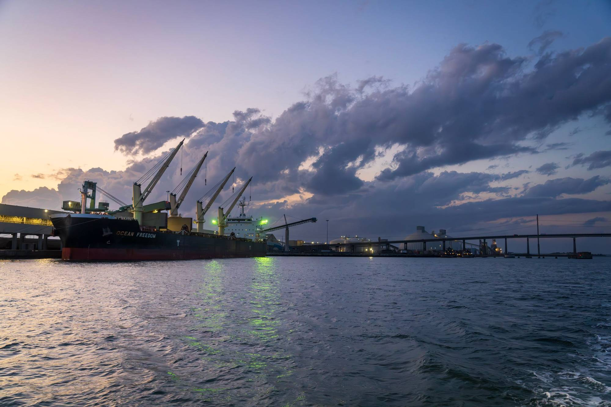
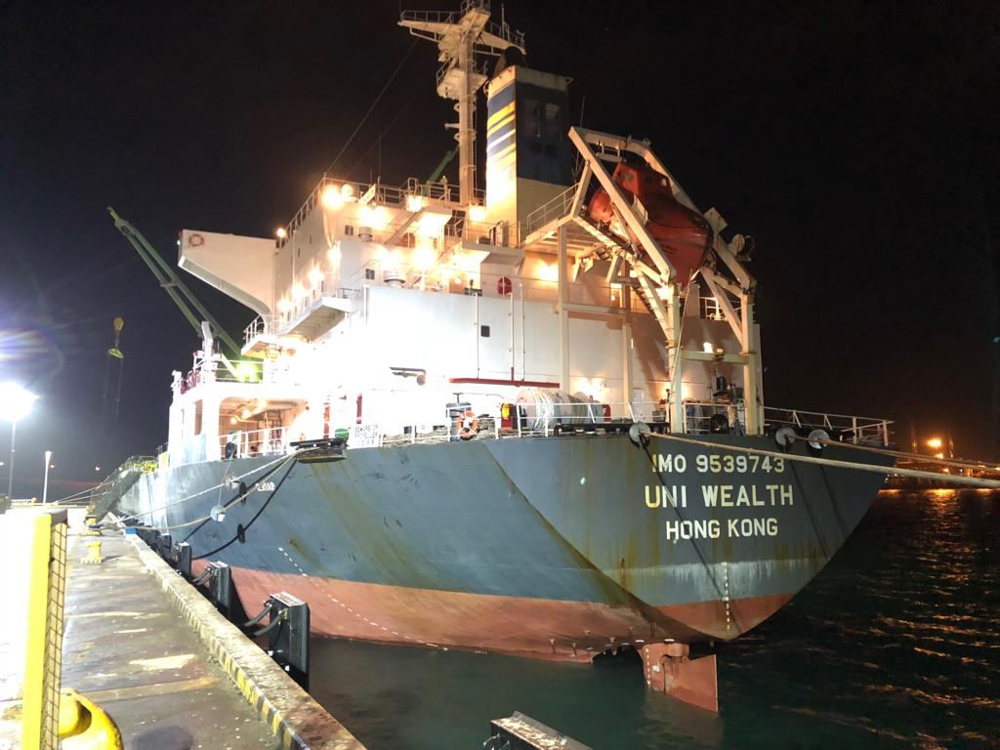
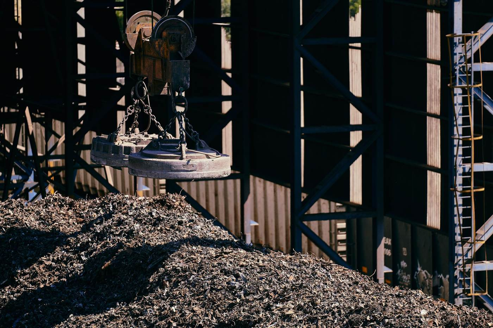
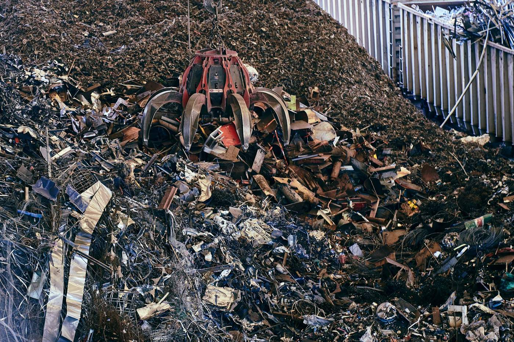
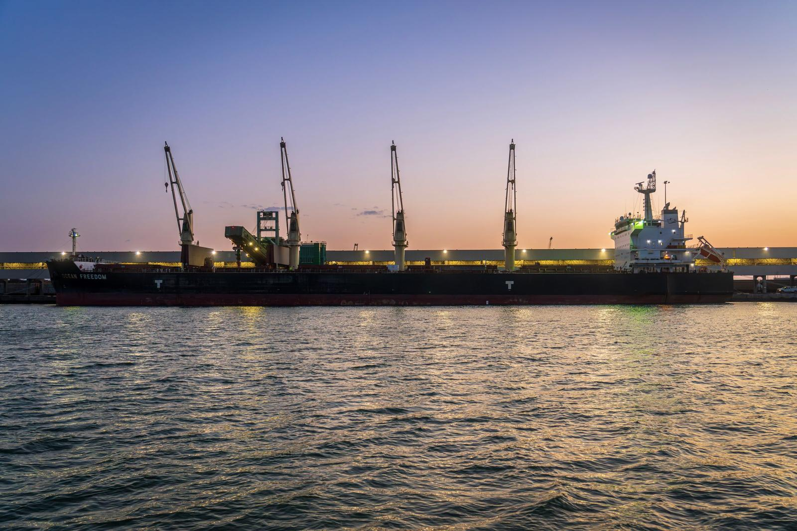
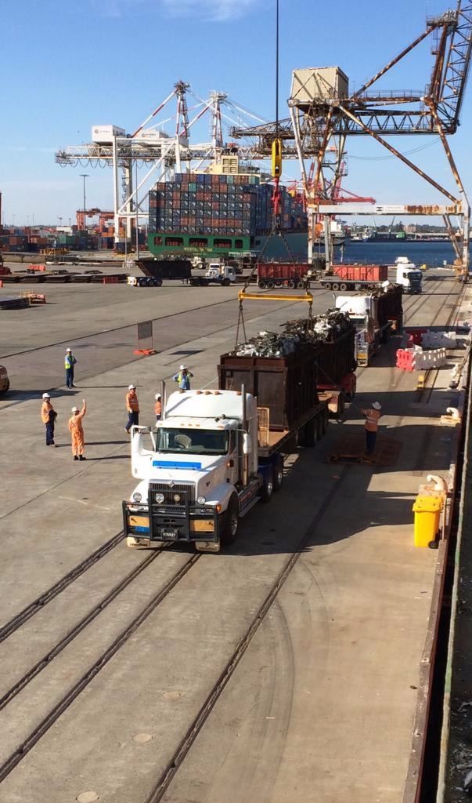
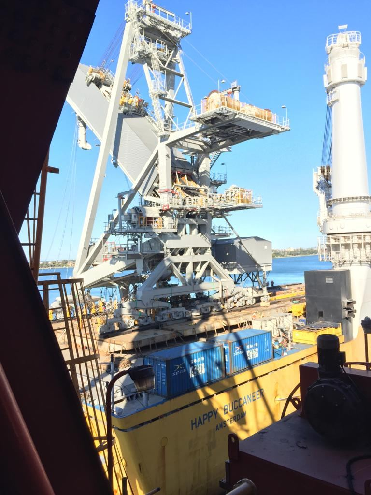
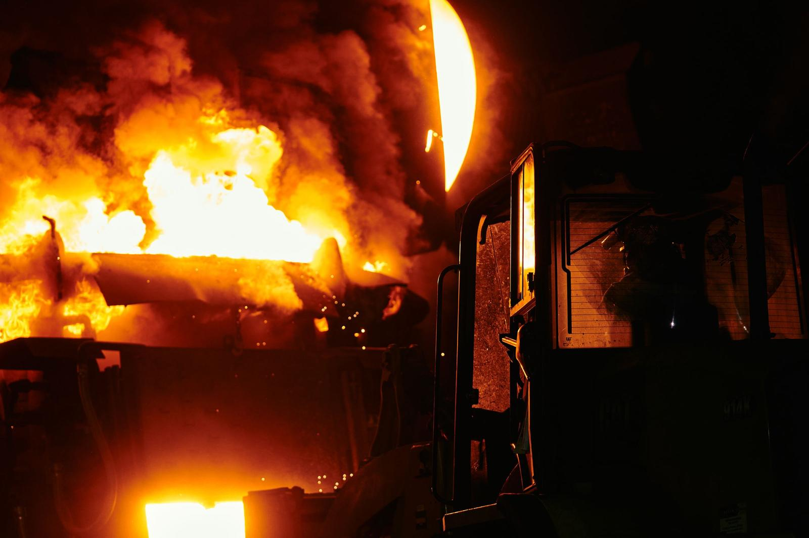
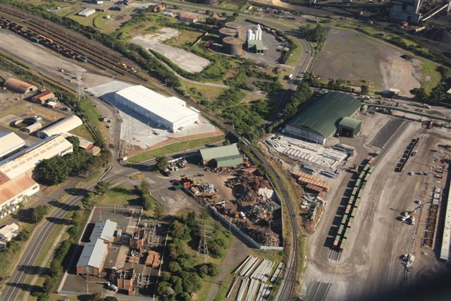
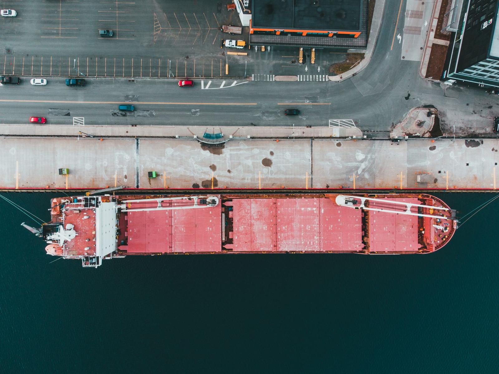

Australian metal, shipped to the world’s steel mills.
We work with demolition and Australian recycling yards to export their ferrous and non-ferrous metals. Ferrous scrap is exported monthly by bulk vessels to end user steel mills across Asia.

THC Holding markets metals for customers as a one stop shop, direct from supplier to end-user mill.
We are the link between demolition firms with scrap metal to sell from industrial and property rehabilitation projects in Australia, and the international buyers who melt it into new steel. Being in regular contact with end-user mills across many markets keeps us ahead of market changes.
Our storyFrom decommissioned site to steel mill.
Metal and steel recovered from decommissioned and demolished industrial installations, handled through our yards and shipped in bulk for melting in overseas steel mills.

01Demolition & decommissioning scrap
Working with the demolition industry on power stations, refineries and industrial plants.
Learn more
02Ferrous & non-ferrous metals
Marketing metals for Australian companies as a one stop shop, direct to the end-user mill.
Learn more
03Bulk export shipping
Monthly bulk shipments from Port Kembla NSW and Fremantle WA to ten markets across Asia.
Learn more
04Redundant steel materials
Oil & gas pipe, H beams, railway lines, mill rollers and mining equipment surplus.
Learn moreA simple path from supplier to end user.
Scrap metal recycling means collecting, separating and processing materials so they can be melted down as raw material for new steel products.
Collect
Steel and metals are recovered from demolition, decommissioning and industrial rehabilitation projects around Australia.
Separate & process
Material is sorted and processed at our yards in Port Kembla, NSW and Fremantle, WA.
Ship in bulk
Monthly bulk shipments leave Australia for steel mills across Asia.
Melt & reuse
Mills melt the scrap into new steel, so this precious raw material is used again.

Australian scrap for mills across Asia.
As a private company, THC Holding is not tied to long-term fixed supply contracts with local mills or overseas customers. We are always focused on finding the best price on the South East Asian spot market.
Shipping from

Recycled metal, a lighter footprint.
Our business is making sure this precious raw material is used and reused, which reduces our environmental impact. Making steel from scrap reduces overall environmental impacts, smelting costs and energy use compared with primary metal production.
Primary production
Sourced from iron ore and coal.
Recycled scrap
Recovered metal melted into new steel products.
Trusted on major projects around Australia.
From power stations to oil refineries and port infrastructure, here are some of the projects THC Holding has shipped out.
Munmorah Power Station
Shell Clyde Refinery Demolition
Caltex Oil Refinery Decommissioning
Swanbank Power Station Demolition
Hismelt Kwinana Deconstruction
3 whole-unit oversize Coal Loaders, Port Waratah Coal Services (PWCS)
Sydney head office. Yards on both coasts.
Monthly bulk shipments leave from our processing yards in Port Kembla, NSW and Fremantle, WA. Head office is in Pyrmont, Sydney.

THC HoldingProcessing yard
Port Kembla
Lot 1, Old Port Road, Port Kembla NSW 2025
Processing yard
Fremantle
75 Edison Circuit, Forrestdale WA 6112

Have steel or metal from a demolition or decommissioning project?
Talk to the THC Holding team about getting it to market, from our yards in Port Kembla and Fremantle to end-user mills across Asia.